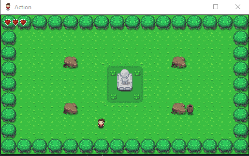
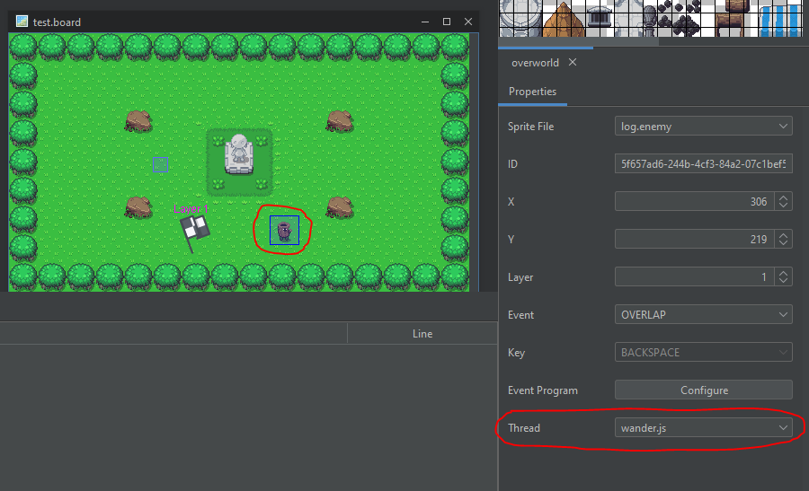

Summary
A game with static sprites is no fun at all! You might be wondering how you can bring life to everyone in your game world, like making them move around, or have them chase the player? Well look no further than the Sprite Thread!

When and when not to use them
Use them for
- Simple idling or wandering for NPCs and Enemies.
- Moving objects such as projectiles, e.g. arrows.
- Enemy AI, chasing the player can be achieved with sprite threads.
Don't use them for
- Anything that needs to last longer than the life of a sprite, e.g. UI programs.
Key things about Threads
NOTE: Threads in RPGWizard aren't "true threads" since the engine is largely single-threaded, instead they give the illusion of threading, as they are run frequently enough.
- Don't use rpgcode.endProgram in programs meant for Sprite Threads.
- Threads are constantly being executed start to finish by the engine.
- Instead use control variables to ensure executions don't overlap.
- Each sprite on a board has their own copy of the thread code.
- Variables won't be shared amongst the sprites, unless you use Globals.
- When the Sprite is destroyed so too will be the running thread.
- Slow running threads will slow the engine down!
- Stick to simple calculations to avoid game slowdowns.
- Or put things on delayed callbacks so they don't execute often.
- If you want to prevent a sprite thread from executing use return.
- Use the JavaScript return; statement at the highest level of the thread.
- When nested in functions, use a chain of return statements.
Example Usage
Idling Behaviour
We are going to look at a simple example of how you can use Sprite Threading to animate sprites on a board by creating a sprite that infinitely wanders.
The sprite will behave in the following ways:
- Infinitely wander around in different directions.
- Move a set distance of pixels in each direction.
- Complete each directional walk in a fixed time.
The Code
// 1: Behavior for a passive sprite that wanders randomly around the board.
var wanderDistancePx = 80; // px
var wanderTime = 2500; // ms
var entity = this;
// 2: Control variable, this if-statement will only run one time, after which
// the sprite will be infinitely wandering
if (!entity.wandering) {
entity.wandering = true; // We are now wandering forever.
doWander();
}
// 3: A simple wandering function which calls itself infinitely
function doWander() {
var id = entity.sprite.id;
// 4: Pick a random direction and shift the sprites pixel location a little
var choice = getRandomDirection();
if (choice === "EAST") {
velocityX = wanderDistancePx;
velocityY = 0;
rpgcode.setSpriteStance(id, "EAST");
} else if (choice === "WEST") {
velocityX = -wanderDistancePx;
velocityY = 0;
rpgcode.setSpriteStance(id, "WEST");
} else if (choice === "SOUTH") {
velocityY = wanderDistancePx;
velocityX = 0;
rpgcode.setSpriteStance(id, "SOUTH");
} else {
velocityY = -wanderDistancePx;
velocityX = 0;
rpgcode.setSpriteStance(id, "NORTH");
}
// 5: Move around forever by calling doWander infinitely
rpgcode.moveSpriteTo(id, entity.x + velocityX, entity.y + velocityY, wanderTime, doWander);
}
// 6: Simple function to get a random direction
function getRandomDirection() {
const directions = ["EAST", "WEST", "NORTH", "SOUTH"];
return directions[Math.floor(Math.random() * directions.length)];
}
Attaching it to a Sprite
To attach a program to a sprite as a thread, select the sprite on the board and the properties tab select the program that you want to use:

After that all you need to do is enter the board with the sprite during gameplay and watch it endlessly run around!
More Advanced Examples
You can find a number of examples of how to use Sprite Threads for Enemy and NPC AI scattered across the demo games, here is a short list of the most interesting ones: